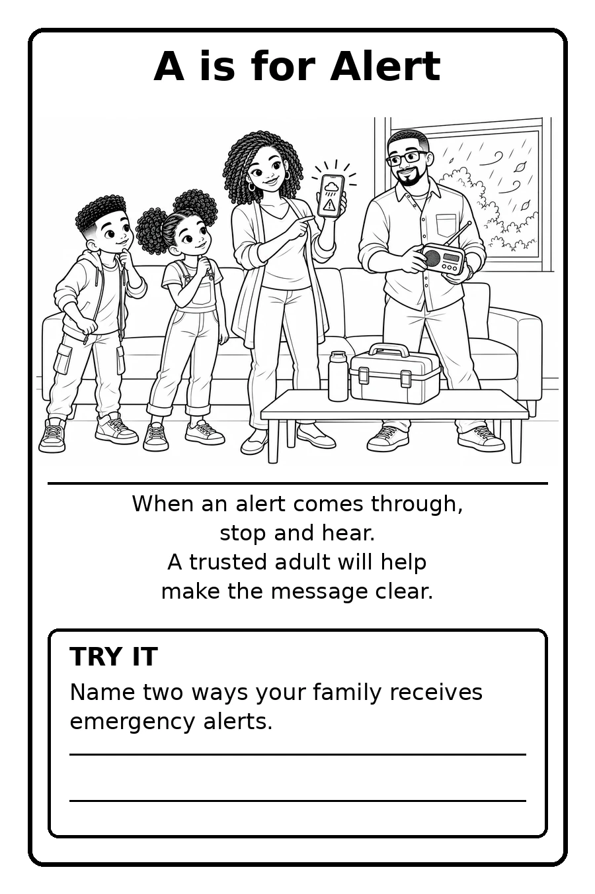

Ready Gary Emergency Preparedness from A to Z
Become your greatest resource.
A saying from my wife, Tiffany, and the idea behind this book.
A coloring book that teaches Gary's kids how to stay safe, stay calm, and help their families when an emergency hits.
Tap a letter to color it in.
When the power goes out for twelve, thirteen, fourteen days, kids shouldn't just sit in the dark waiting for help.
They should know what to do. Ready Gary turns emergency preparedness into something kids can learn letter by letter, with crayons in hand, so the skills stick before they're ever needed. Being self-reliant isn't a luxury. It's something every child in Gary deserves to learn.
What it is
Ready Gary is a children's coloring book that walks through emergency preparedness from A to Z. Every page pairs a letter with something kids can understand, remember, and talk about with their families.
- Made for GaryWritten with this city's families, schools, and neighborhoods in mind.
- Made by a Gary teacherWritten, illustrated, and laid out by Wendell Mosby.
- Made to be usedA coloring book kids will actually pick up, not a pamphlet they'll lose.

Look inside: A is for Alert
Every letter gets its own page with three parts working together.
A rhyme kids can remember. "When an alert comes through, stop and hear. A trusted adult will help make the message clear." Short enough to say out loud, simple enough to recall when it counts.
A family scene to color. Kids see families who look like theirs, at home, handling an emergency together and staying calm.
A Try It activity. Each page ends with a question kids answer with their families, like naming two ways your family receives emergency alerts. The learning goes home with them.
Where the books go
Kickstarter funds pay for printing. Copies go to students free of charge, in this order:
Gary Community School Corporation
Free copies for elementary students across the district come first.
Gary charter schools
If the campaign goes past its goal, copies expand to elementary students in Gary's charter schools.
Are you a principal, teacher, or community partner? Schedule a conversation about bringing Ready Gary to your students.

About the author
I'm Wendell Mosby, a social studies and civics teacher in Gary, Indiana. I'm in my second year in the classroom and completing my teaching license through Indiana Wesleyan University, because I'm in this for the long haul.
I've spent twenty years building opportunity for overlooked communities as a nonprofit leader, community college trustee, and community organizer. I'm the author of Crisis Proves Character and Finding My Voice, a journal for teens who feel unheard. Ready Gary is the next thing I'm building for Gary's kids.
Help put Ready Gary in kids' hands.
Every pledge prints books for Gary students. If you can't pledge, sharing the campaign helps just as much.
Back Ready Gary on Kickstarter